This section is meant for users who have implemented v3.x.y (e.g., 3.0.5, 3.0.6, 3.1.0 etc.) of FusionMaps in their applications and are now upgrading to FusionMaps XT (v3.3.1).
Here, we will discuss the following:
- Steps to upgrade to FusionMaps XT from FusionMaps v3.x.y
- How to use the new features available in FusionMaps XT ?
- API introduced in FusionMaps XT
- API deprecated in FusionMaps XT
- Changes and updates made in maps
All the features of FusionMaps XT (v3.3.1) are backward compatible with FusionMaps v3.2 or earlier. Hence, upgrading is as easy as copy-pasting files. Listed below are the things that you need to take care of while upgrading:
- Copy all SWF files from Download Pack > Maps folder and replace your existing map SWF files in your deployed folder
- Copy FusionCharts.js, Fusioncharts.HC.js, FusionCharts.HC.Maps.js and jquery.min.js from Download Pack > Maps folder to your deployed folder
IMPORTANT NOTE:
- Starting FusionMaps XT , use of FusionMaps.js is deprecated. Use FusionCharts.js instead. But, although deprecated, to ease your upgrade process to FusionMaps XT, we have provided a new FusionMaps.js in Download Pack > Maps folder. This FusionMaps.js will help in loading FusionCharts.js (located in the same folder as FusionMaps.js) and all related JavaScript files in your application. However, we recommend that you replace all references to FusionMaps.js to FusionCharts.js in your code.
- Starting FusionMaps XT, use of FusionMapsExportComponent.js is deprecated. Use FusionChartsExportComponent.js instead. It is recommended that you replace all references FusionMapsExportComponent.js to FusionChartsMapsExportComponent.js in your code.
- Clear your browser cache (very important step)
In case, you are also using charts from FusionCharts XT v3.2.2 SR-5 or earlier version, you need to download or update to the latest FusionCharts XT pack and copy FusionCharts.HC.Charts.js from the Charts folder of the downloaded FusionCharts XT pack.
Moreover, if you are using charts from PowerCharts XT v3.2.1 SR-1 or earlier version, you need to download or update to the latest PowerCharts XT pack and copy FusionCharts.HC.PowerCharts.js from the Charts folder of the downloaded PowerCharts XT pack.
Moreover, if you are using charts from FusionWidgets XT v3.2 SR-2 or earlier version, you need to download or update to the latest FusionWidgets XT pack and copy FusionCharts.HC.Widgets.js from the Charts folder of the downloaded FusionWidgets XT pack.
The above steps will convert all your v3.2 or earlier maps to FusionMaps XT. You don't have to modify any code, as all the maps are backward compatible. However, if you wish to make use of any new features, then you will have to modify your code to include the same. Given below are details of code changes required for implementing the new features introduced in FusionMaps XT (v3.3.0) .
To get you started with FusionMaps XT, we will show you how to build a World Map to show the Population Distribution across continents. Once completed, the map will look as under (with animation and interactivity, which is not reflected by the image below):
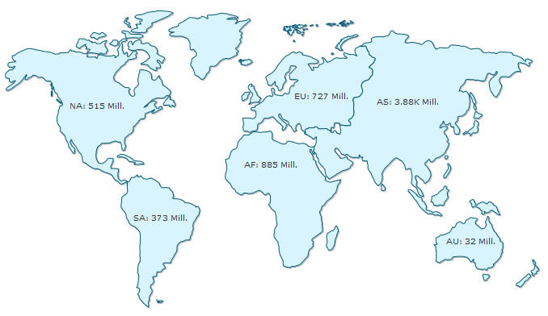
Follow the steps below to get started:
- Create a folder LearningFusionMapsXT on your hard-drive. We will use this folder as the root folder for building all FusionMaps XT examples.
- Create a folder named MyFirstMap inside the above folder. Inside the MyFirstMap folder, create a folder named Maps.
- Copy FusionCharts.js, FusionCharts.HC.js, FusionCharts.HC.Maps.js and jquery.min.js files from Download Pack > Maps folder to MyFirstMap > Maps folder.
- Specify the name of the map, that is the JavaScript alias. In this case we will use World.
- If you render Flash maps, copy FCMap_World.swf from Download Pack > Maps folder to MyFirstMap > Maps folder. This SWF file is required to render the chart in Flash.
- Create an XML file » (Creating an XML file is as easy as creating a text file using Windows Notepad or any other text editor. It is actually a plain text file with extension - xml) in MyFirstMap folder with name Data.xml.
- Copy the code given below (left) to Data.xml file. It is the XML-lized form of the Population data shown in the table (right).
<map borderColor='005879' fillColor='D7F4FF' numberSuffix='M' includeValueInLabels='1' labelSepChar=':' baseFontSize='9'> <data> <entity id='NA' value='515' /> <entity id='SA' value='373'/> <entity id='AS' value='3875' /> <entity id='EU' value='727' /> <entity id='AF' value='885' /> <entity id='AU' value='32' /> </data> </map>Continents Population (in Millions) North America 515 South America 373 Europe 727 Asia 3875 Africa 885 Australia 32 - Create an HTML file (using a text editor like Notepad, TextMate etc. or the Web Development software you use) in MyFirstMap folder and copy-paste the code given below and save it as FirstMap.html:
<html> <head> <title>My First map using FusionCharts JavaScript Class</title> <script type="text/javascript" src="Maps/FusionCharts.js"></script> </head> <body> <div id="mapContainer">FusionMaps XT will load here!</div> <script type="text/javascript"><!-- var myMap = new FusionCharts ("World", "MyMapId", "750", "400", "0"); myMap.setXMLUrl ("Data.xml"); myMap.render("mapContainer"); // --> </script> </body> </html>
And that completes the recipe!
Open the file FirstMap.html in a Web Browser » Internet Explorer, Firefox, Opera or Safari (Mac/iPhone/iPad/Windows) and you will see an animated World Map similar to the one below:
See it live!
Starting FusionMaps XT v3.3.0, JavaScript maps can be exported and saved to a server disk. To do so, you need to configure your own server. The sever should support PHP and JAVA (1.3 or above). Also, you need to place the FusionCharts PHP export handler and Apache Batik SVG Rasterizer library in your server.
The XML or JSON data will be as shown under:
<map... exportAction='save' > ... </map>or
"map": {
...
"exportAction" : "save"
},
...
);
To know more on how to set up and configure the server click here.
FusionMaps XT v3.3.0 also allows you to customize the labels of the export context menu. By default, the labels appear as Download as PNG, Download as JPG, Download as PDF and Download as SVG. To achieve this, you need to use the exportFormats attribute. The attribute value should be a delimiter separated key-value pair. The delimiter character to be used is '|' (pipe character). The syntax for the attribute value exportFormats='KEY=Value|KEY=Value'. The XML or JSON data will look as under:
<map... exportFormats='PNG=Export as High Quality Image|JPG|PDF=Export as PDF File|SVG' > ... </map>or
"map": {
...
"exportFormats" : "PNG=Export as High Quality Image|JPG|PDF=Export as PDF File|SVG"
},
...
);
In the above data, the labels of PNG and PDF has been customized. Since, no value has been set to JPG and SVG they will appear with its default label, which is Download as JPG and Download as SVG. The order of the options will appear as set in this attribute.
Note:If you do skip any export option in this attibute the context menu will not display that option. For example, if you set exportFormats='PNG=Export as High Quality Image|JPG|PDF=Export as PDF File' the context menu will appear without the SVG option since it is not mentioned in the attribute.
FusionMaps XT boasts of a plethora of enhancements. To make use of the new and modified features, you will have to modify your code to include the same. Here, we will discuss the following:
- Enabling your maps to run on iPad and iPhone and in devices where Flash Player is not available
- Converting all your maps from Flash rendering to JavaScript rendering
- Rendering pure JavaScript maps
- Creating dynamically re-sizable maps
- Using FusionCharts JavaScript Class
- Making use of new JavaScript events
- Mouse events introduced for legend, markers and connectors
- Changing individual map attribute at run-time using JavaScript API
- Enabling managed printing in Firefox/Chrome/Safari/Opera
- Adding support for JSON data
- Using FusionCharts jQuery plugin to render map
- Using interactive legend
- Using gradient legend
- Setting display modes of background image
- Alignment of background image
- Recursive number scaling
- Configuring thousand separator position
After you have made the above changes and copied all the JavaScript files, your maps are automatically ready for iPad and iPhone and for all devices where Flash Player is disabled, not-installed or not-supported. This has been made possible by the new FusionCharts JavaScript Class, which provides automatic fallback to JavaScript maps (using FusionCharts.HC.js, FusionCharts.HC.Maps.js and respective JavaScript map file). FusionCharts JavaScript Class can automatically decide whether to render JavaScript maps or Flash maps.FusionCharts JavaScript class is capable of detecting whether the browser is running in iPad, iPhone, or iPod or in devices where Flash Player is disabled, not-installed, or not-supported and it switches to pure JavaScript rendering architecture.
Click here to see a live sample in your iPad or iPhone.
If you wish to use JavaScript maps only (and not use Flash at all), you can convert your existing maps to pure JavaScript maps (HTML5) by adding a single line of code. All you need to do is write FusionCharts.setCurrentRenderer('javascript') before you call FusionMaps constructor in your existing implementation.
<html>
<head>
<title>My First map</title>
<script type="text/javascript" src="FusionCharts.js"></script>
</head>
<body>
<div id="mapContainer">FusionMaps XT will load here!</div>
<script type="text/javascript"><!--
FusionCharts.setCurrentRenderer('javascript');
var map = new FusionMaps ("FCMap_World.swf", "MapId", "750", "400", "0");
map.setDataURL ("FirstMap.xml");
map.render("mapContainer");
// -->
</script>
</body>
</html>
See it live!
Note:
Use of FusionMaps.js is deprecated from FusionMaps XT. Please use FusionCharts.js (FusionCharts JavaScript Class) and respective API instead. But, although deprecated, to ease your upgrade process to FusionMaps XT, we have provided a new FusionMaps.js in Download Pack > Maps folder. This FusionMaps.js will help in loading FusionCharts.js (located in the same folder as FusionMaps.js) and all related JavaScript files in your application. However, we recommend that you replace all references to FusionMaps.js to FusionCharts.js in your code.
An example of using FusionCharts JavaScript Class to render maps is shown below:
<html>
<head>
<title>My First map using FusionCharts JavaScript Class</title>
<script type="text/javascript" src="FusionCharts.js"></script>
</head>
<body>
<div id="mapContainer">FusionMaps XT will load here!</div>
<script type="text/javascript"><!--
FusionCharts.setCurrentRenderer('javascript');
var myMap = new FusionCharts ("FCMap_World.swf", "MapId", "750", "400", "0");
myMap.setXMLUrl ("FirstMap.xml");
myMap.render("mapContainer");
// -->
</script>
</body>
</html>
See it live!
Note : Many browsers restrict JavaScript from accessing local file system owing to security reasons. The JavaScript maps, when running locally, will not be able to access data provided as a URL. If you run the files from a server, it will run absolutely fine, though. When running locally, however, if you provide the data as string (using the Data String method), it works fine.
Starting FusionMaps XT, you can specify the JavaScript map alias (as listed in the List of Maps page) instead of the map SWF filename to create a pure JavaScript map. The code snippet below demonstrates how this is achieved:
<html>
<head>
<title>Creating Pure JavaScript map</title>
<script type="text/javascript" src="FusionCharts/FusionCharts.js"></script>
</head>
<body>
<div id="mapContainer">FusionMaps XT will load here!</div>
<script type="text/javascript"><!--
var myChart = new FusionCharts( "World", "myChartId", "400", "300", "0" );
myChart.setXMLUrl("Data.xml");
myChart.render("mapContainer");
// -->
</script>
</body>
</html>
In the above code, instead of FCMap_World.swf we have specified World, the JavaScript map alias. Based on the JavaScript map alias provided, FusionCharts JavaScript Class renders the respective JavaScript chart.
You can also specify JavaScript map alias while using the Object as Constructor parameter through the type property as shown below:
var myChart = new FusionCharts( {
type: "World",
width: '400',
height: '300',
debugMode : false
});
All maps in FusionMaps XT can now resize automatically as per the changed size of the container element. The maps can accept width and height in percent (%) and scale in percent with respect to the containers' size. Whenever a container's size changes, the map automatically resizes itself with respect to the new size of the container element. To achieve this, all you need to do is set the dimensions of map in percentage. Rest is taken care by the map itself. A sample map constructor might look like this:
Using FusionMaps constructor :
new FusionMaps ("FCMap_World.swf","myMapId", "80%", "100%", "0");
Using FusionCharts constructor :
new FusionCharts ("FCMap_World.swf","myMapId", "80%", "100%", "0");
In the example below, we have created a very basic sample where a map fills up the entire space of the Web browser. When the browser's dimensions are changed, the map resizes itself. Note the width and height declared for BODY and DIV elements using CSS.
<html>
<head>
<title>My First map - Using dynamically re sizable map</title>
<script type="text/javascript" src="FusionCharts.js"></script>
</head>
<body style="height:100%;">
<div id="mapContainer" style="height:100%;" >
FusionMaps XT will load here</div>
<script type="text/javascript"><!--
var myMap = new FusionCharts ("FCMap_World.swf",
"myMapId", "100%", "100%", "0");
myMap.setXMLData ("<map/>");
myMap.render ("mapContainer");
// -->
</script>
</body>
</html>
See it live!
In the above code we have:
- Set the height of the body to be 100%
- Set the height of the container DIV to 100%, which means that it will vertically fill up the body space of the HTML
- Set the map's width and height to 100%
The whole page or the HTML BODY element dynamically resizes itself as and when the browser resizes. The map container (DIV with id - "mapContainer"), being a direct child of the whole page, changes its dimensions as per the change of its parent. Subsequently, the map, being the direct child of the map container and set with 100% width and height, resizes itself to fit to the resize dimensions of its parent.
Starting FusionMaps XT, the use of FusionMaps.js is deprecated. FusionMaps XT comes with FusionCharts JavaScript Class that takes care of the rendering and management of maps. It also provides a large set of APIs to work with. Using these APIs you can do the following:
- Render Flash maps
- Render pure JavaScript maps (not Flash)
- Use the object oriented JavaScript implementation methods
- Make use of new data providing functions like setXMLUrl, setXMLData, setChartData, setChartDataUrl
- Use the static function FusionCharts to access all maps instances present in a page
- Configure and create LinkedCharts, which is a smart drill-down feature
- Make use of the better printing support for all non-Internet Explorer based browsers using the PrintManager class
- Debug and manage errors
- Set properties of an existing map using the setChartAttribute() function
- Provide data in JSON format using setJSONUrl, setJSONData, setChartData, setChartDataUrl functions
- Update an existing map's data using Flash map's native AJAX capabilities or browser's AJAX support
- Use API to get data back from map in XML/JSON/CSV format
- Check the rendering state of a map using function like isActive()
- Duplicate an existing map's configurations using the clone() function
- Remove and clean a map object and free as much memory as possible using the dispose() function
- Make use of better and advanced JavaScript event model (using the addEventListener function) to listen to all events
Existing implementations using FusionMaps.js, APIs like setDataURL()and setDataXML() functions and FC_Rendered event will continue to function without any problem.
FusionCharts JavaScript Class allows you to handle events using the advanced JavaScript event model. You can use the addEventListener() function to each map object or global FusionCharts class to listen to various events related to map loading, rendering, resizing, creating LinkedCharts, printing, error handling, etc. If you intend to make use of the new JavaScript events or methods exposed in XT, you will have to make the necessary modifications in your code. You need to get the map reference and define the event listener function. You can define a function separately and pass the reference to the function to the addEventListener(). You can also declare an anonymous function along with the addEventListener() function call itself. The code below shows the two models:
<html>
<head>
<title>FusionMaps XT- listen to DrawComplete event</title>
<script type="text/javascript" src="Maps/FusionCharts.js">
</script>
</head>
<body>
<div id="mapContainer">Map will load here!</div>
<script type="text/javascript"><!--
var myMap = new FusionCharts( "Maps/FCMap_World.swf",
"myMapId", "400", "300", "0");
myMap.setXMLUrl("Data.xml");
myMap.render("mapContainer");
function myMapListener(event, parameter)
{
alert( event.sender.id + " has completed map drawing" );
}
FusionCharts("myMapId").addEventListener ("DrawComplete" , myMapListener );
// -->
</script>
</body>
</html>
<html>
<head>
<title>Map - listen to DrawComplete event</title>
<script type="text/javascript" src="Maps/FusionCharts.js">
</script>
</head>
<body>
<div id="chartContainer">Map will load here!</div>
<script type="text/javascript"><!--
var myMap = new FusionCharts( "Maps/FCMap_World.swf",
"myMapId", "400", "300", "0" );
myMap.setXMLUrl("Data.xml");
myMap.render("mapContainer");
FusionCharts("myMapId").addEventListener ("DrawComplete" ,
function(event, parameter)
{
alert( event.sender.id + " has completed map drawing" );
}
);
// -->
</script>
</body>
</html>
The above code listens to the DrawComplete event and shows a JavaScript alert when the event gets fired. To get details of each event please read FusionMaps XT and JavaScript > API Reference > Events page.
Existing JavaScript implementations using FC_Rendered or FC_Loaded events will continue to function without any problem.
Starting FusionMaps XT, you can capture the following mouse events:
- Click on legend items (in icon based legend) using LegendItemClicked event
- Click on markers using MarkerClicked event
- Hover on marker using MarkerRollover event
- Hover out from markers using MarkerRollout event
- Click on connectors using ConnectorClicked event
- Hover on connectors using ConnectorRollover event
- Hover out from connectors ConnectorRollout event
- Hover on entities using EntityRollover event
- Hover out from entities using EntityRollout event
Existing users: Prior to FusionMaps XT, entity roll over/out events could be captured through a single event - FC_Event. Although deprecated, you can continue to use this event in your existing code without any problem.
For more information on the listed events read this.
FusionCharts JavaScript library provides an option to set a map attribute at run-time. This is as easy as calling a simple function. You just need to get the map object and call setChartAttribute() function. Let's see a sample code where we change the fill color of all the entities of a map:
var weekly_sales_map = FusionCharts('JanuaryMapId');
weekly_sales_map.setChartAttribute( "fillColor", "A9C2CA" );
In the code above, we get the map object from FusionCharts collection passing the DOMId of the map. Next, we call setChartAttribute() function and pass two parameters to it. The first parameter is the name of the attribute that needs to be changed. The second parameter provides the new value of the attribute that needs to be set.
In FusionMaps XT, whenever an attribute of a map is changed, the entire map is re-drawn without animation.
FusionMaps XT provides a feature that correctly prints Flash maps from Firefox, Safari or other Mozilla, WebKit, and Gecko based browsers. We call it Managed Printing. This is managed by adding a single line of code in the page:
FusionCharts.printManager.enabled(true);
This feature, when enabled, prepares the charts in the page for printing. Once preparation is complete, you can print the page with all maps in the page either using File > Print menu of the browser or using code :
FusionCharts.printManager.managedPrint();
The Print Manager internally does the following to achieve this :
- Once a map is rendered, it silently gathers all aspects of the image data of the present state of the map
- It converts the image data into image using canvas HTML object
- It hides the canvas image below the map
- When print is invoked, a parallel CSS based print media layout is created
- In this print media layout, the Flash map is hidden and the canvas image is displayed
- This layout with the canvas image is sent to the printer for print
Note: Print Manager works only in browsers that supports canvas object.
Print Manager also fires events when it has all the maps ready for managed print. The code below shows how it works:
FusionCharts.addEventListener (
FusionChartsEvents.PrintReadyStateChange ,
function (identifier, parameter) {
if(parameter.ready){
alert("Map is now ready for printing.");
document.getElementById('printButton').disabled = false;
}
});
Note that the PrintReadyStateChange event is a global event. Thus, this event cannot be listened from individual map instance. Only FusionCharts static class can listen to this event.
The parameters event argument contains a property - ready. This property returns true when the Print Manager is ready to print all maps in a page. Once true is returned by the event, we show a JavaScript alert message-box.The button which was disabled earlier is now enabled.
Now you can try printing from File → Print menu. You can also use a button or any function that calls the window.print() function.
You can also use the following code to print the whole page using FusionCharts JavaScript class:
FusionCharts.printManager.managedPrint();
Apart from XML, FusionMaps XT can also accept JSON data format. This functionality is provided by FusionCharts JavaScript Class. You can pass map JSON data in one of the three forms:
- As JSON URL/feed
- As JSON Object (in JavaScript)
- As JSON String
The functions that help in accepting JSON data are setJSONUrl, setJSONData, setChartData, setChartDataUrl. Below are some examples of passing JSON data:
myMap.setJSONUrl("Data.json");
...
myMap.setJSONData {
"map": {
"numberPrefix" : "$"
},
"data": [
{ "id": "AL", "value": "70" },
{ "id": "AK", "value": "100" },
{ "id": "AZ", "value": "90" },
{ "id": "AR", "value": "72" }
]
}
);
When running from a local file system, maps may not be able to load JSON data from URL/file on certain browsers due to security limitations of AJAX. You will need to run the maps on a server (localhost or remote) to make it work.
Starting FusionMaps XT, you can create maps using jQuery syntax. This has been made possible using the introduction of FusionCharts jQuery plugin. This plugin allows you to render maps anywhere within a Web page, update and retrieve map data, update cosmetic and functional settings and use all existing features of FusionMaps XT.
Setting it up:
Setting up of FusionCharts jQuery plugin is as simple as putting an additional reference to the plugin file (FusionCharts.jqueryplugin.js) as shown below:
<script type="text/javascript" src="../Charts/jquery.min.js"></script> <script type="text/javascript" src="../Charts/FusionCharts.js"></script> <script type="text/javascript" src="../Charts/FusionCharts.jqueryplugin.js"></script>
For more details of setting up and using FusionCharts jQuery plugin, please go through the FusionMaps XT and jQuery section.
In FusionMaps XT color range names appear in a legend. Each legend items consists of a color box or icon with the color represented by the color range and the name of the color range.
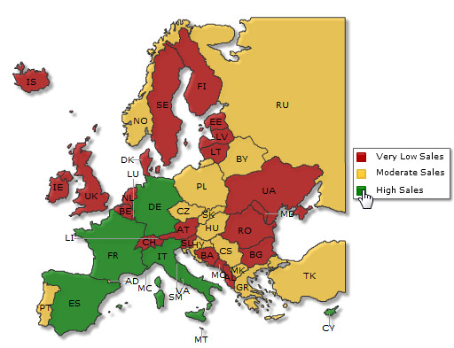
Starting XT, the legend is interactive. That is, when you click each legend icon, it hides the entities corresponding to the color range represented by the legend item.
In the example below, "High Sales" icon was clicked that resulted in the map as under. Note how the "High Sales" icon has also been converted to gray-scale. To show the area back, click on this icon again.
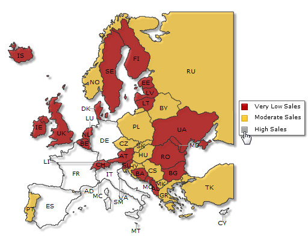
See it live!
You can disable the interactive feature setting interactiveLegend attribute 0 in the <map> element.
FusionMaps XT offers another mode of displaying color ranges - using gradient legend. Gradient legend is an interactive pane of blended colors derived from the <colorRange> definitions. A linear scale is drawn with two drag-able pointers. Each color defined for a color range blends with the next color, thus forming a gradient strip. Each point on the gradient scale represents a unique color and value. So, entities with different values will appear in unique colors as per the position of the value on the gradient scale.
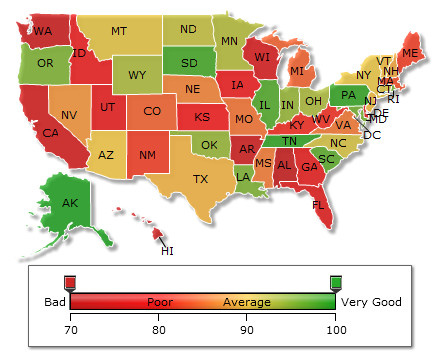
See it live!
The above map shows a gradient legend with range of 70 to 100. The map entities are colored based their values. Each value represents a color on the gradient legend scale.
To enable gradient legend you need to do the following:
- Set gradient="1" in the <colorRange> element
- Set the starting value of the gradient color range using the minValue attribute of the <colorRange> element
- Set the starting color of the gradient legend using the code attribute of the <colorRange> element
- Optionally, set start label and end label of the legend using the startLabel and the endLabel attributes of the <colorRange> element
- Set maxValue and color in each <color> element of the <colorRange> element
The data to define the gradient legend shown in the above map is given below:
<map ...>
<colorRange gradient="1" minValue="70" code="CC0001" startlabel="Bad" endLabel="Very Good">
<color maxValue="80" displayValue="Poor" code="FF0000" />
<color maxValue="90" displayValue="Average" code="FFCC33" />
<color maxValue="100" code="069F06" />
</colorRange>
<data>
...
</data>
</map>
{
"map": {
...
},
"colorrange": {
"gradient": "1",
"minvalue": "70",
"code": "CC0001",
"startlabel": "Bad",
"endlabel": "Very Good",
"color": [
{
"maxvalue": "80",
"displayvalue": "Poor",
"code": "FF0000"
},
{
"maxvalue": "90",
"displayvalue": "Average",
"code": "FFCC33"
},
{
"maxvalue": "100",
"code": "069F06"
}
]
},
"data": [
...
]
}
Gradient legend is highly interactive and allows you to show entities having values of a certain range and hide rest of the entities. Click and hold the any of the pointers on the gradient legend and drag it to a particular point on the scale to set the numeric range that is to be shown.
The map below shows a gradient legend with pointers dragged to create a range of 85 to 95. Accordingly, the entities not having values in this range are hidden on the map.
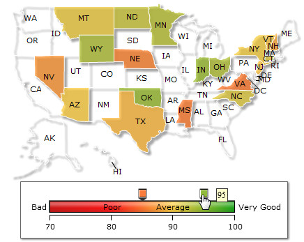
It is now possible to display the map's background images using stretch, tile, center, etc. display modes. To apply a display mode to the background image, you need to use the bgImageDisplayMode attribute in the <map> element. For example,
<map bgImageDisplayMode='Stretch' ...>
There are six different modes namely none, stretch, tile, center, fit and fill. Sample maps showcasing each mode along with the name and a brief definition are given below:
 |
| Stretch - Expands the image to fit the entire map area, without maintaining original image constraints |
| Fit - Fits the image proportionately on the map area |
| Fill -Proportionately fills the entire map area with the image |
| 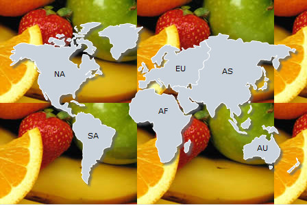 |
| Tile - The image is repeated as a pattern on the entire map area |
| Center - The image is positioned at the center of the map area |
| 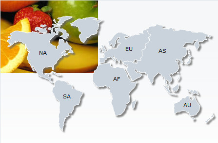 |
| none - the original image is placed at the top-left corner of the map background (default) |
Additionally you can also increase or decrease the magnification of the background image. To customize the magnification of the background image use the attribute bgImageScale. The value of this attribute can be anything between 0-300. The default value of the attribute is 100. Any value less than 100 will reduce the size of the background image and any value more than 100 will increase the size of the background image. You can use this attribute in combination with all display modes other than stretch.
The example below shows a map with bgImageScale set to 150 and bgImageDisplayMode set to none:
The map below shows background image with bgImageScale set to 40 and bgImageDisplayMode set to tile:
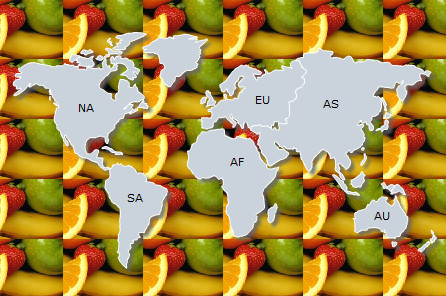
Try all the possible combinations of background image settings from here.
Note: The bgSWF and bgSWFAlpha attributes are deprecated. Use bgImage and bgImageAlpha instead.
It is now possible to configure the vertical and horizontal alignment of map's background image. The attributes used to apply the alignments are bgImageVAlign (possible values are - top, middle and bottom) and bgImageHALign (possible values are left, middle and right) in the <map> element. You can use this attribute in combination with all display modes other than center and stretch.
<map bgImageHAlign='top' bgImageVAlign='middle' ...>
The maps below show how the combination of alignments works in a map:
| bgImageVAlign='top' bgImageHAlign='left' |
bgImageVAlign='top' bgImageHAlign='middle' |
bgImageVAlign='top' bgImageHAlign='right' |
| bgImageVAlign='middle' bgImageHAlign='left' |
bgImageVAlign='middle' bgImageHAlign='middle' |
bgImageVAlign='middle' bgImageHAlign='right' |
 |
||
| bgImageVAlign='bottom' bgImageHAlign='left' |
bgImageVAlign='bottom' bgImageHAlign='middle' |
bgImageVAlign='bottom' bgImageHAlign='right' |
Try all the possible combinations of background image settings from here.
Note: The bgSWF and bgSWFAlpha attributes are deprecated. Use bgImage and bgImageAlpha instead.
FusionMaps XT introduces the Recursive Number Scaling feature. Recursive number scaling comes into the picture when you have number scales defined for your map. It helps you display the map data better by breaking-up the predefined number scale into smaller sections. For example, in a map where time is being plotted, you can display 3.87 days as 3 days, 20 hours, 52 minutes and 25 seconds.
Let us jump to an example straightaway to understand this better.
Let us build a map which indicates the shipment time taken for various continents. Each shipment time can take time ranging from a few days to a few months. And we have the data for each continent in hours itself. Now, if we were to show all the data on the map in hours only, it will not appear too legible. What we can do is build a scale indicating time and then specify it to the map. This scale will look something as under:
24 hours = 1 day
7 days = 1 week
4 weeks = 1 month
3 months = 1 quarter
4 quarters = 1 year
We can define the same in our map using:
<map defaultNumberScale='h' numberScaleValue='24,7,4,3,4' numberScaleUnit='d,w,m,q,y' ... >
Please see the Number Scaling page for more details on how to build a number scale. Now let us consider the data below:
<map defaultNumberScale="h" numberScaleValue="24,7,4,3,4" numberScaleUnit="d,w,m,q,y"
borderColor="005879" fillColor="D7F4FF" includeValueInLabels="1"
baseFontSize="9" showBevel="0" >
<data>
<entity id="NA" value="515"/>
<entity id="SA" value="373"/>
<entity id="AS" value="3875"/>
<entity id="EU" value="727"/>
<entity id="AF" value="885"/>
<entity id="AU" value="32"/>
</data>
</map>
{
"map": {
"defaultnumberscale": "h",
"numberscalevalue": "24,7,4,3,4",
"numberscaleunit": "d,w,m,q,y",
"bordercolor": "005879",
"fillcolor": "D7F4FF",
"includevalueinlabels": "1",
"basefontsize": "9",
"showbevel": "0"
},
"data": [
{"id": "NA", "value": "515" },
{"id": "SA", "value": "373" },
{"id": "AS", "value": "3875" },
{"id": "EU", "value": "727" },
{"id": "AF", "value": "885" },
{"id": "AU", "value": "32" }
]
}
Notice how 1.32 months is converted to 1 month, 1 week, 1 day and 21 hours. This map makes use of recursive number scaling and after converting the time in hours to say, months, whatever is left over is not converted into decimals. It is rather converted into smaller units of time and broken down as far as possible - so the remaining hours are first converted to weeks and again the remaining hours to days and when the hours are too few to be converted into days, they are displayed in hours itself. This gives us a fair idea of how much time was used for each shipment.
To use recursive number scaling, all you have to do is set <map ... scaleRecursively='1' .. >.
The entire XML/JSON for the map above is:
<map scaleRecursively='1'
defaultNumberScale="h" numberScaleValue="24,7,4,3,4" numberScaleUnit="d,w,m,q,y"
borderColor="005879" fillColor="D7F4FF" includeValueInLabels="1"
baseFontSize="9" showBevel="0" >
<data>
<entity id="NA" value="515"/>
<entity id="SA" value="373"/>
<entity id="AS" value="3875"/>
<entity id="EU" value="727"/>
<entity id="AF" value="885"/>
<entity id="AU" value="32"/>
</data>
</map><
{
"map": {
"scaleRecursively": "1",
"defaultnumberscale": "h",
"numberscalevalue": "24,7,4,3,4",
"numberscaleunit": "d,w,m,q,y",
"bordercolor": "005879",
"fillcolor": "D7F4FF",
"includevalueinlabels": "1",
"basefontsize": "9",
"showbevel": "0"
},
"data": [
{"id": "NA", "value": "515" },
{"id": "SA", "value": "373" },
{"id": "AS", "value": "3875" },
{"id": "EU", "value": "727" },
{"id": "AF", "value": "885" },
{"id": "AU", "value": "32" }
]
}
You can also control the levels of recursion. Suppose in the above map, instead of 1 month, 1 week, 1 day and 21 hours, you are pretty happy with showing 1 month, 1 week itself either for space constraints or some other good reason. You can control the levels of recursion for all the numbers on your map using the maxScaleRecursion attribute. Suppose you want only two levels of recursion, then set <map ... maxScaleRecursion='2'>. This will convert the above map to:
Notice how all the numbers on the map are using a maximum of two time units - the rest have been truncated. When you want all the units of a number to be shown on the map, you can either omit the maxScaleRecursion attribute or set it to -1.
By default, all the units of a number are separated by a space. You can customize the separator using the scaleSeparator attribute. For example, setting scaleSeparator=', ' will separate each unit with a comma as shown below:
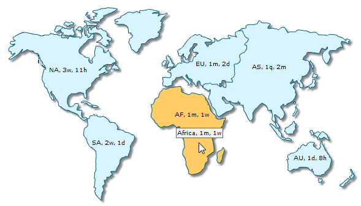
FusionMaps XT automatically decides the position of the thousand separator. By default, the thousand separator is placed after every three digits from the decimal place. A map with default thousand separator position will look as under:
Starting FusionMaps XT, you can customize the position of the thousand separator and place it as required. To place the thousand separator in custom positions you need to use the thousandSeparatorPosition attribute. Shown below is a map with the thousand separator placed after four digits from right:
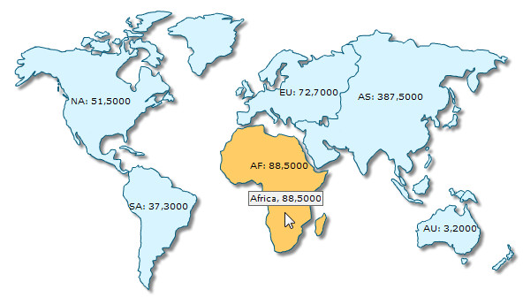
For the above map, the attribute thousandSeparatorPosition is set to '4'. So, the thousand separator (,) is placed after every four digits starting from right.
You can also set multiple values (separated by comma) to this attribute, instead of a single value. Thus, you can specify complex thousand separator positions. For example, setting multiple values you can display numbers in Indian currency format, where the first thousand separator (for thousand) is placed after three digits from right and then onwards the thousand separator is placed after every two digits. Shown below is an example map displaying Indian currency format:
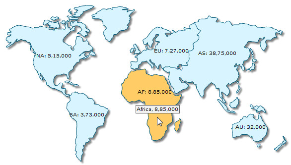
In the above map, we have set thousandSeparatorPosition='2,3'. So, the thousand separator is first placed after 3 digits starting from right and then onwards after every two digits. Given below are some sample combinations of values which can be set to this attribute:
| Value set | Description | Example |
| thousandSeparatorPosition="0" | When this attribute is set to 0, it takes the default value, which is 3, and places the separator after every three digits starting from right.
Rule: When zero is specified as the thousand separator position, it assumes the default value, which is 3. |
1,344,317,518 |
| thousandSeparatorPosition="2" | When this attribute is set to 2, the thousand separator is placed after every two digits starting from right. | 13,44,31,75,18 |
| thousandSeparatorPosition="4" | When this attribute is set to 4, the thousand separator is placed after every four digits starting from right. | 13,4431,7518 |
| thousandSeparatorPosition="1,2" | In this case, first the thousand separator is placed after two digits from right. Then onwards the separator will be placed after every digit. | 1,3,4,4,3,1,7,5,18 |
| thousandSeparatorPosition="1,2,3" | In this scenario, first the separator will be placed after three digits from right, then the separator will be placed after two digits and then onwards it will be placed after every digit. | 1,3,4,4,3,17,518 |
| thousandSeparatorPosition="3,1,0" | In this scenario, the value 0 will be replaced by the default value 3. So, the thousand separator will be first placed after three digits from right. Then the separator is placed after one digit. Then onwards it will be placed after every three digits.
Rule: When zero is specified as the first thousand separator position in a comma separated list of thousand separator positions, it assumes the default value, which is 3. |
134,431,7,518 |
| thousandSeparatorPosition="1,0,2" | This is a special case where 0 is used as the second value. In this scenario, first the thousand separator is placed after two digits. Next, the value 0 assumes the previous value, which is 2. Hence, the separator will again be placed after two digits and then onwards it will be placed after every digit.
Rule: When zero is specified NOT as the first thousand separator position in a comma separated list of thousand separator positions, it assumes the previous value from the list. |
1,3,4,4,3,1,75,18 |
| thousandSeparatorPosition="0,1,3" | In this scenario, first the thousand separator is placed after three digits. Then it is placed after every digit. Now, the value 0 assumes the previous value, 1 and rest of the separators are placed after every digit.
Rule: When zero is specified NOT as the first thousand separator position in a comma separated list of thousand separator positions, it assumes the previous value from the list. |
1,3,4,4,3,1,7,518 |
Note: Any negative value set to this attribute will be converted to a positive value. For example, thousandSeparator="-2" will be converted to thousandSeparator="2".
FusionMaps XT introduces a large number of XML API and JavaScript API as discussed below:
| XML API | ||
| Attribute Name | Type & Range | Description |
| In <map> element | ||
| caption | String | Set a title to the map. |
| subcaption | String | Set a sub title to the map. |
| captionPoistion | String | Set the position the title and the sub title on map. The acceptable values are 'top-left', 'top-right', 'bottom-left', 'bottom-right' and 'top-center'. The default value is 'top-center'. |
| labelConnectorColor | Color as Hex Code | Set a color to all the available label connector lines. |
| labelConnectorAlpha | Number (0-100) | Set the alpha of all the available label connector lines. |
| connectorThickness | Number (0-100) | Set the thickness of marker connector lines. |
| connectorDashed | Boolean (0/1) | Set whether the marker connector lines are dashed. |
| connectorDashLen | Number | Set the length of the dashes of dashed marker connector lines. |
| connectorDashGap | Number | Set the gap between dashes of of marker dashed connector lines. |
| ShowBorder | Boolean (0/1) | Whether the common entity border will be displayed or not. Default value is 1. |
| showEntityToolTip | Boolean (0/1) | Whether to show or hide tooltip for all entities present in a map. The default value is 1. |
| showConnectorToolTip | Boolean (0/1) | Whether to show or hide tooltip for all marker connectors present in a map. The default value is 1. |
| bgImage | String | To place any image (JPG/PNG/GIF) or Flash movie (SWF) as background of the map, enter the (path and) name of the background image or SWF file. It should be in the same domain as the map.
Loading of Flash movie is deprecated and is not supported by JavaScript maps. |
| bgImageAlpha | Number (0-100) | Helps you specify the opacity for the loaded background image. |
| bgImageDisplayMode | String (stretch, tile, fit, fill, center, none) | Helps you specify the mode in which the background image is to be displayed.
|
| bgImageVAlign | String (top, middle, bottom) | Helps you to vertically align the background image. |
| bgImageHAlign | String (left, middle, right) | Helps you to horizontally align the background image. |
| bgImageScale | Number (0-300) | Helps you magnify the background image. This attribute will only work when the attribute bgImageDisplayMode is set to none, center or tile. |
| emptyEntityColor | Color as Hex Code | The default color for any map entity whose values are not provided in map data. |
| emptyEntityAlpha | Number (0-100) | The default opacity of any map entity whose values are not provided in map data. |
| scaleRecursively | Boolean (0/1) | Whether to scale the number recursively? For more details, read this. |
| maxScaleRecursion | Number | How many recursions to complete during recursive scaling? -1 completes the entire set of recursion. |
| scaleSeparator | String | What character to use to separate the scales that are generated after recursion? |
| thousandSeparatorPosition | List of comma separated Numbers | This option helps you specify the position of the thousand separator. For more details, read this. |
| interactiveAnimation | Boolean (0/1) | Whether to apply animation on entities getting hidden or shown due to interactivity through gradient legend. The default value is 1. |
| interactiveAnimDuration | Number | The duration (in seconds) of the animation of entities getting hidden or shown due to interactivity through gradient legend. The default value is .5 second. |
| interactiveLegend | Boolean (0/1) | This attribute lets you interact with the legend in your map. When you click a legend item, the entities associated with that color range are hidden from the map. Re-clicking the legend item causes the entities to reappear. |
| legendIconScale | Number (0-5) | Sets the magnification of legend icons. The default value is 1 which denotes 100% size. |
| legendPointerWidth | Number | Allows you to set the width of the Gradient Legend pointers. |
| legendPointerHeight | Number | Allows you to set the height of the Gradient Legend pointers. |
| legendPointerBgColor | Color as Hex Code | Sets the background color of Gradient Legend pointers. |
| legendPointerBgAlpha | Number (0-100) | Sets the opacity of the background of Gradient Legend pointers. |
| legendPointerBorderColor | Color as Hex Code | Sets the color of the border of Gradient Legend pointers. |
| legendPointerBorderThickness | Number | Sets the border thickness of Gradient Legend pointers. |
| legendPointerHighlightColor | Color as Hex Code | Sets the highlight color of Gradient Legend pointers. |
| legendPointerShadowColor | Color as Hex Code | Sets the shadow color of Gradient Legend pointers. |
| legendScaleLineColor | Color as Hex Code | Sets the color of the line showing the numeric scale of Gradient Legend. |
| legendScaleLineAlpha | Number (0-100) | Sets the opacity of the line showing the numeric scale of Gradient Legend. |
| legendScaleLineThickness | Number | Sets the thickness of the line showing the numeric scale of Gradient Legend. |
| snapLegendPointers | Boolean (0/1) | Allows you to snap the Gradient Legend pointers exactly on the tick when released on a near by position. |
| legendSnapRange | Number (0-5) | Allows you to set the snapping range of the Gradient Legend pointers. |
| In <colorRange> element | ||
| gradient | Boolean (0/1) | Whether to show Gradient Legend. Default value is 0. |
| minValue | Number | Sets the minimum value or the lower limit of the numeric range and Gradient Legend. |
| code | Color as Hex Code | Specifies the starting color of the lower limit of Gradient Legend. |
| alpha | Number (0-100) | Starting opacity of Gradient Legend. Default value is 100. |
| startLabel | String | Specifies the label for the lower limit of Gradient Legend. |
| endLabel | String | Specifies the label for the upper limit of Gradient Legend. |
| In <color> element of <colorRange> element | ||
| code | Color as Hex Code | Specifies the color representing the color range. This attribute replaced the deprecated attribute color. |
| In <entity> element of <data> element | ||
| useHoverColor | Boolean (0/1) | Enable or disable hover color over individual entity. |
| hoverColor | Color as Hex Code | Set hover color to individual entity. |
| labelConnectorColor | Color as Hex Code | Set color for individual label connector line. |
| labelConnectorAlpha | Number (0-100) | Set alpha for individual label connector line. |
| showToolTip | Boolean (0/1) | Whether to show tooltip for the entity. Default value is 1. |
| In <connector> element of <markers> element | ||
| showToolTip | Boolean (0/1) | Whether to show tooltip for the connector. Default value is 1. |
| JavaScript API | |||||||||||
| Name | Description | ||||||||||
| Global Items | |||||||||||
| FusionCharts | Function that helps in accessing the JavaScript Object reference of a map, chart or gauge. A reference of a map is necessary to perform all available API functions, use all available properties and listen to events. Example: FusionCharts ("MapDOMId") | ||||||||||
| FusionCharts | Static class. It helps in providing access to static members (functions and properties) that apply to all instances of map, charts and gauges available in the global scope (JavaScript window object). | ||||||||||
| FusionCharts JavaScript Class - static members | |||||||||||
| setCurrentRenderer | Sets the renderer for all the maps. Presently you can pass either javascript or flash as the value of renderer parameter. All the maps that get rendered, after this function call, will abide by this setting. | ||||||||||
| render | This function acts as a compact constructor for FusionCharts. It is a static function that helps rendering a map using a single line of code.
It can take an Object as parameter containing all map parameters.For example, var myMap = FusionCharts.render({
swfUrl : "FCMap_World.swf",
id : "myMapId",
renderAt : "mapContainer",
dataSource : "Data.xml"
})
It can also take linear string parameters as listed below:
|
||||||||||
| addEventListener | This function acts as advanced event registration model. It accepts two arguments: the event type or name of the event and the event handler function to be executed.
The function addEventListener when called as static method using FusionCharts.addEventListener(), registers the global events of all the maps present in a page. You may attach a function to multiple events by passing the event names in an array. |
||||||||||
| removeEventListener | This function removes a named event-listener function for a particular event that was defined using addEventListener.
This function when called as static method using FusionCharts.removeEventListener() removes a named event-listener from all the maps on a page. The name of the event type is passed as the first parameter. The second parameter is the name of the function which was added as the event listener for that event by addEventListener. You may also remove a function from multiple events by passing the event names in an array. |
||||||||||
| version | This returns the version of FusionCharts JavaScript Class. | ||||||||||
| items | This is an Array containing references to all the map, chart and gauge instances in a page. Using this, you can get the reference of a map object. A reference of a map is necessary to perform all available functions, use all available properties and listen to events. When a map DOMID is passed, it returns the reference of the instance of the FusionCharts object (if available) . This is same as FusionCharts() static function which also provides the reference of the map object. |
||||||||||
| printManager | printManager helps in advanced print management of Flash maps, charts and gauges in Firefox, Chrome, Safari and Opera.
Members
|
||||||||||
| debugMode | debugMode is the native debugging utility of FusionCharts JavaScript Class. It allows users to watch the JavaScript activity of maps, charts and gauge and debug them accordingly. It logs external and internal events and shows notice, warning and error messages.
Members
|
||||||||||
| The core FusionCharts JavaScript Class | |||||||||||
| FusionCharts - constructor | This is the constructor method of FusionCharts JavaScript Class. It allows you to create new instance of FusionCharts using legacy set of linear parameters as well as an Object parameter.
It can take an Object as parameter containing all map/chart parameters. Chart ParametersIt can take linear string parameters (second example on right) as listed below:
Apart from these parameters you can add additional parameters to the object based parameter. Those additional parameters are :
Additionally, it can take a mixture of linear parameters and an Object parameter at the end. The linear parameters should be in order. You can pass any one or more (up to no. 11 in the list above) linear parameters before you can pass the Object parameter. See the third example on right. After instantiating the Object, Initialized event gets fired. Note : Many browsers restrict JavaScript from accessing local file system owing to security reasons. The JavaScript maps, when running locally, will not be able to access data provided as a URL(using xmlurl and jsonurl as dataFormat). If you run the files from a server, it will run absolutely fine, though. When running locally, however, if you provide xml or json(using the Data String method), it works fine. |
||||||||||
| setXMLUrl | Sets or changes the XML data of the map to a specified URL. The URL has to be relative to the web page where the map is deployed. By default, cross-domain URL-s are not allowed. Again, absolute URL-s are not allowed.
Note : Many browsers restrict JavaScript from accessing local file system owing to security reasons. The JavaScript maps, when running locally, will not be able to access data provided using setXMLUrl function. If you run the files from a server, it will run absolutely fine, though. When running locally, however, if you use setXMLData function , it works fine. |
||||||||||
| setXMLData | Changes the data of the map to the specified XML string.
Note of caution: When specifying XML as String, please make sure that there are no conflicts in quotes between the JS function call and the quotation mark used to enclose attributes in XML string. |
||||||||||
| setJSONUrl | Sets or changes the data of the map to a specified URL. The URL has to be relative to the web page where the map is deployed. By default, cross-domain URL-s are not allowed. Again, absolute URL-s are not allowed.
Note : Many browsers restrict JavaScript from accessing local file system owing to security reasons. The JavaScript maps, when running locally, will not be able to access data provided using setJSONUrl function. If you run the files from a server, it will run absolutely fine, though. When running locally, however, if you use setJSONData function , it works fine. |
||||||||||
| setJSONData | Changes the data of the map to the specified JSON string or JSON Object.
Note of caution: When specifying JSON as String, please make sure that there are no conflicts in quotes between the JS function call and the quotation mark used to enclose JSON properties and values. |
||||||||||
| setChartDataUrl | Sets or changes the data of the map to a specified URL. The URL has to be relative to the web page where the map is deployed. By default, cross-domain URL-s are not allowed. Again, absolute URL-s are not allowed.
This function takes two parameters. The first is URL of the data. The second is the dataFormat in string, which can be "xml" or "json". Note : Many browsers restrict JavaScript from accessing local file system owing to security reasons. The JavaScript maps, when running locally, will not be able to access data provided using setChartDataUrl function. If you run the files from a server, it will run absolutely fine, though. When running locally, however, if you pass the data as string, it works fine. |
||||||||||
| setChartData | Sets or changes the data of the map.
This function takes two parameters. The first is dataSource of the data. The second is the dataFormat. The data source can be a URL to XML source, URL to JSON source, XML as string, JSON as string and JSON as object. Hence, to identify the format correctly dataFormat is passed as second parameter. dataFormat : Defines the format of the dataSource.
Note : Many browsers restrict JavaScript from accessing local file system owing to security reasons. The JavaScript maps, when running locally, will not be able to access data provided as a URL(using xmlurl and jsonurl as dataFormat). If you run the files from a server, it will run absolutely fine, though. When running locally, however, if you provide xml or json(using the Data String method), it works fine. |
||||||||||
| configure | Sets a map configuration before rendering the map. You can mainly use this function to set map messages using this function.
The name of the configuration and the value of the configuration are passed as parameters. You can also pass a collection of configurations as Object to the function. The parameter object will contain name and value pairs of the configuration name and the corresponding values. |
||||||||||
| render | This function renders a map inside a container element. The reference is passed as a parameter of this function.
This function is called after the map gets instantiated as JavaScript object new FusionCharts. It takes a string containing the ID of an HTML container Element like DIV or SPAN. You can also pass the HTML Node Object of a container element to this function. |
||||||||||
| setChartAttribute | Sets map attribute and updates the map with the new value. It takes two parameters. The name of the attribute and the value of the parameter.
The name suggests map's root properties (also known as "map attributes" which are passed through <map> element in map XML data or through map property in map's JSON data). You can also pass a collection of attribute name and value pairs to the function by passing them as an Object. See second example on the right. Once map attributes get changed, drawcomplete event is fired. |
||||||||||
| configureLink | Through this function you can pass all your desired configurations for the LinkedCharts. You can pass all the properties that a FusionCharts constructor function accepts. Those map properties will be applied to the LinkedCharts. If not provided, the LinkedCharts will inherit properties from the parent map.
Additionally, you can also configure the overlay-button using overlayButton property. These settings also go as another object. configureLink function can accept parameters in either of two formats :
The following are the properties that we can pass as settings for overlay-buttons:
|
||||||||||
| exportChart | Calls the export map routine to save the map as PDF/image. exportSettings object here contains overriding parameters to override the export parameters initially specified in XML. For more information read this.
While saving a map to a server location, exported event is raised to convey status of export. |
||||||||||
| Prints a map. | |||||||||||
| addEventListener | This function acts as advanced event registration model. It accepts two arguments: the event type or name of the event and the event handler function to be executed.
The function addEventListener when called as static method using FusionCharts.addEventListener(), registers the global events of all the maps present in a page. You may attach a function to multiple events by passing the event names in an array. |
||||||||||
| removeEventListener | This function removes a named event-listener function for a particular event that was defined using addEventListener.
This function when called as static method using FusionCharts.removeEventListener() removes a named event-listener from all the maps on a page. The name of the event type is passed as the first parameter. The second parameter is the name of the function which was added as the event listener for that event by addEventListener. You may also remove a function from multiple events by passing the event names in an array. |
||||||||||
| clone | The function allows you to duplicate a FusionCharts JavaScript object and uses its settings to create another map.
The function can optionally take an object as parameter. The object can contain chart settings which will override the existing settings of the source map before it gets cloned. The function returns an instance of FusionCharts JavaScript object. |
||||||||||
| dispose | You can remove a map instance from page and memory. using dispose() function.
Additionally, the function will raise BeforeDispose event prior to removing a map and disposed after the map has been removed. |
||||||||||
| getXMLData | Returns the XML data of map as string. | ||||||||||
| getJSONData | Returns the JSON data of map as Object. | ||||||||||
| getChartData | This function returns map data as per dataFormat provided as parameter. When xml is passed as dataFormat it provides XML data as string. When json is passed as dataFormat, data is returned as JSON Object. | ||||||||||
| getDataAsCSV | Returns the data of map as CSV string. The output CSV string can be configured using XML parameters. String representing data of map in CSV format. | ||||||||||
| getChartAttribute | Returns the value of the attribute as specified in map XML Node or "map" property of JSON data.
Value of the attribute; or "null" if the attribute was empty or not found in XML/JSON. |
||||||||||
| resizeTo | This function resizes an existing map. You can pass the width and height values in percentage or as pixel values (without the px suffix).
Once a map gets resized, resized and drawcomplete events are fired. |
||||||||||
| isActive | This function checks whether a FusionCharts SWF is visible and active. Returns true or false. | ||||||||||
| signature | It returns a String representing the signature of map. | ||||||||||
| chartType | This function returns the map type or map alias of the rendered by the FusionCharts JavaScript object.
Please note that the alias value is dependent on the map SWF file-name. The alias is built removing .swf extension and all extra path information from the src value of the map loaded. |
||||||||||
| id | Id of the map. This is commonly called the DOMId of the map. | ||||||||||
| width | Width of the map. | ||||||||||
| height | Height of the map. | ||||||||||
| src | Path of the map SWF file. This is applicable only for Flash maps. | ||||||||||
| Events Types (to listen to this event use FusionCharts.addEventListener or mapObject.addEventListener function) | |||||||||||
| LegendItemClicked | This event is raised when a Legend item is clicked. | ||||||||||
| EntityRollover | This event is raised when user hovers mouse over an entity. | ||||||||||
| EntityRollout | This event is raised when mouse moves out of an entity. | ||||||||||
| MarkerRollover | This event is raised when user hovers mouse over a marker. | ||||||||||
| MarkerRollout | This event is raised when mouse moves out of a marker. | ||||||||||
| MarkerClicked | This event is raised when a marker is clicked. | ||||||||||
| ConnectorClicked | This event is raised when a connector is clicked. | ||||||||||
| ConnectorRollover | This event is raised when user hovers mouse over a connector. | ||||||||||
| ConnectorRollout | This event is raised when mouse moves out of a connector. | ||||||||||
| Initialize | This event is raised when an instance of FusionCharts JavaScript Class is initialized. This happens prior to data loading and map creation events. | ||||||||||
| DataLoadRequested | This event is raised when map data is requested from a URL. This is fired only when data source is a URL. | ||||||||||
| DataLoadRequestCancelled | This event is raised when data load process is cancelled by calling cancelDataloadRequest() function in DataLoadRequested event-listener. In cases where data source is a local path, this event is automatically raised. | ||||||||||
| DataLoadRequestCompleted | This event is raised before map data is loaded. | ||||||||||
| DataLoadCancelled | This event is raised when map data loading is cancelled. | ||||||||||
| BeforeDataUpdate | This event is raised before data is loaded into FusionCharts JavaScript class and is ready to be passed to the map. | ||||||||||
| DataUpdated | This event is raised when data is loaded into FusionCharts JavaScript class and is ready to be passed to the map. | ||||||||||
| Loaded | This event is raised when the map has finished downloading itself in the user's browser. You can use this to hide any loader components that you might have on your page. | ||||||||||
| DataLoaded | This event is raised when the map has finished loading data. It can be used to further process data in any other components in your page. | ||||||||||
| Rendered | This event is raised when the map has finished rendering. This call is made only once per loaded map SWF (even if new data is supplied to it). It can be used to invoke any further JavaScript methods on map, or to change the data of map. | ||||||||||
| DrawComplete | This event is raised every time FusionCharts completes drawing a map. This is also raised on each resize or map reload. Even when you interact with the map, say you slice a Pie, this event will be fired. | ||||||||||
| Resized | This event is raised when map resizes. | ||||||||||
| Exported | This event is raised when the map has finished export as server side save or client side download. This is used to know whether the export is successful. It also provides the path (web path for server side save and local path for client side download) where the exported file has been saved. This event is not raised when Download action is performed. | ||||||||||
| BatchExported | This event is raised after Batch Export is performed using Client Side Export handler. | ||||||||||
| PrintReadyStateChange | This event is raised to notify the status of Print Manager. It is raised twice. First, when Print Manager starts processing all maps. It is raised again when all the maps are ready for managed print. | ||||||||||
| BeforeLinkedItemOpen | This event is raised before a LinkedChart is opened. | ||||||||||
| LinkedItemOpened | This event is raised after a LinkedChart is opened. | ||||||||||
| BeforeLinkedItemClose | This event is raised before a LinkedChart is closed. | ||||||||||
| LinkedItemClosed | This event is raised after a LinkedChart is closed. | ||||||||||
| BeforeDispose | This event is raised before a map is going to be removed and cleaned from memory. It is raised just before a map is to be disposed or deleted (mostly using dispose()). This event is, in most cases, followed by a Disposed event. | ||||||||||
| Disposed | This event is raised after a map is removed and cleaned from memory. Technically, it is raised just after a map is disposed or deleted using dispose(). | ||||||||||
| DataLoadError | This event is raised when there was an error in loading data from the specified Url. It can be used to show an error message to user, or to take a corrective measure. | ||||||||||
| DataXMLInvalid | This event is raised when the XML data loaded by map is invalid. It can be used to show an error message to user, or to take a corrective measure. | ||||||||||
| Error | This event is raised when error occurs in JavaScript implementation. This event is fired on global scope and needed to be listened only by FusionCharts.addEventListener function. | ||||||||||
| Warning | This event is raised when there are minor errors or warnings while implementing the map. This event is fired on global scope and needed to be listened only by FusionCharts.addEventListener function. | ||||||||||
Starting FusionMaps XT (v3.2.0) a few of the XML API and the JavaScript API are deprecated as listed below:
| Deprecated XML API | ||
| Deprecated | Deprecated in version | Replacement |
| In <map> element | ||
| markerConnThickness | XT (v3.2.0) | connectorThickness |
| markerConnDashed | XT (v3.2.0) | connectorDashed |
| markerConnDashLen | XT (v3.2.0) | connectorDashLen |
| markerConnDashGap | XT (v3.2.0) | connectorDashGap |
| markerConnColor | XT (v3.2.0) | connectorColor |
| markerConnAlpha | XT (v3.2.0) | connectorAlpha |
| bgSWF | XT (v3.2.0) | bgImage |
| bgSWFAlpha | XT (v3.2.0) | bgImageAlpha |
| imageSave | v3.1.0 | exportEnabled |
| imageSaveURL | v3.1.0 | exportHandler |
| imageSaveDialogColor | v3.1.0 | exportDialogColor |
| imageSaveDialogFontColor | v3.1.0 | exportDialogFontColor |
| In <color> element of the <colorRange> element | ||
| color | XT (v3.2.0) | code |
| Deprecated JavaScript API | ||
| Deprecated | Deprecated in version | Replacement |
| Use of the wrapper class present in the file - FusionMaps.js | XT (v3.2.0) | Use FusionCharts JavaScript Class as wrapper from the file - FusionCharts.js |
| Use of the client side JavaScript export component from file - FusionMapsExportComponent.js | XT (v3.2.0) | Use the file - FusionChartsExportComponent.js |
| Function getMapFromId | XT (v3.2.0) | FusionCharts.items or FusionCharts collection. |
| Function setDataURL | XT (v3.2.0) | Function setXMLUrl |
| Function setDataXML | XT (v3.2.0) | Function setXMLData |
| Function getXML | XT (v3.2.0) | Function getXMLData |
| Function hasRendered | XT (v3.2.0) | Function isActive |
| Function getMapAttribute | XT (v3.2.0) | Function getChartAttribute |
| Function exportMap | XT (v3.2.0) | Function exportChart |
| Function saveAsImage | XT (v3.2.0) | Function exportChart |
Starting FusionMaps XT the changes and updates that have been incorporated are listed below:
Starting FusionMaps XT (v3.2.0), the following changes have been incorporated for the following map SWF file names in the Core Pack.
| Earlier Version | FusionMaps XT SWF file name | FusionMaps XT JavaScript Alias |
| FCMap_Netherland.swf | FCMap_Netherlands.swf | Netherlands |
| FCMap_NorthIreland.swf | FCMap_NorthernIreland.swf | NorthernIreland |
| FCMap_NorthAmerica_WOCentral.swf
(Since v 3.3.1) |
FCMap_NorthAmericaWOCentral.swf | NorthAmericaWOCentral |
Starting FusionMaps XT (v3.3.0), the following changes have been incorporated for the following map SWF file names in the Additional America Map Pack.
Note: Starting FusionMaps XT (v3.3.0), Additional Americas and India Map Pack has been modified to Additional America Map Pack. The entities of India (States) which was existing within the Additional Americas and India Map Pack have been shifted under the newly introduced Asia Map Pack.
| Earlier Version | FusionMaps XT SWF file name | FusionMaps XT JavaScript Alias |
| FCMap_Alagaos.swf | FCMap_Alagoas.swf | Alagoas |
| FCMap_Perambuco.swf | FCMap_Pernambuco.swf | Pernambuco |
| FCMap_Tocantin.swf | FCMap_Tocantins.swf | Tocantins |
Starting FusionMaps XT (v3.3.0), the following map packs have been introduced.
- Additional Asia Map Pack
- Additional Africa Map Pack
- Additional Oceania Map Pack
- Additional USA Map Pack
Starting FusionMaps XT (v3.3.0), Additional Americas and India Map Pack has been modified to Additional America Map Pack. The entities of India (States) which was existing within the Additional Americas and India Map Pack have been shifted under the newly introduced Asia Map Pack.
Starting FusionMaps XT (v3.2.0), the following maps have been introduced in the core pack.
| Map Name | SWF Name | JavaScript Alias |
| World with Antarctica | FCMap_WorldWithAntarctica.swf | WorldWithAntarctica |
| World 8 Regions with Antarctica | FCMap_World8WithAntarctica.swf | World8WithAntarctica |
| Kosovo Districts
(Since v 3.3.0) |
FCMap_KosovoDistricts.swf | KosovoDistricts |
| Serbia Wo Kosovo
(Since v 3.3.0) |
FCMap_SerbiaWoKosovo.swf | SerbiaWoKosovo |
| South Sudan
(Since v 3.3.0) |
FCMap_SouthSudan.swf | SouthSudan |
| Sudan Wo South Sudan
(Since v 3.3.0) |
FCMap_SudanWoSouthSudan.swf | SudanWoSouthSudan |
Starting FusionMaps XT (v3.3.0), the following maps have been introduced.
- Additional Europe Map Pack
- Additional Asia Map Pack
- Additional Africa Map Pack
- Additional Oceania Map Pack
- Additional USA Map Pack
Note: Starting FusionMaps XT (v3.3.0), Additional Americas and India Map Pack has been modified to Additional America Map Pack. The entities of India (States) which was existing within the Additional Americas and India Map Pack have been shifted under the newly introduced Asia Map Pack.
Starting FusionMaps XT (v3.2.0), the following changes have been made in the map definitions as given in the list below.
- Core Map Pack
- Additional Asia Map Pack
Note: Starting FusionMaps XT (v3.3.0), Additional Americas and India Map Pack has been modified to Additional America Map Pack. The entities of India (States) which was existing within the Additional Americas and India Map Pack have been shifted under the newly introduced Asia Map Pack.
| Core Map Pack | ||||
| Map SWF Name | Status | Internal Id | Short Name | Long Name |
| FCMap_Africa.swf | Added | 059 | CA | Canary Islands |
| Added
(Since v 3.2.0 - SR1) |
060 | SS | South Sudan | |
| FCMap_Asia.swf | Added | 052 | TU | Turkey |
| Added | 053 | SY | Syria | |
| Added | 054 | IZ | Iraq | |
| Added | 055 | SA | Saudi Arabia | |
| Added | 056 | YM | Yemen | |
| Added | 057 | MU | Oman | |
| Added | 058 | AE | United Arab Emirates | |
| Added | 059 | QA | Qatar | |
| Added | 060 | BA | Bahrain | |
| Added | 061 | KU | Kuwait | |
| Added | 062 | JO | Jordan | |
| Added | 063 | IS | Israel | |
| Added | 064 | LE | Lebanon | |
| FCMap_Azerbaijan.swf
(Since v 3.2.0 - SR1) |
Modified | 09 | BA | Baku |
| FCMap_Bangladesh.swf
(Since v 3.2.0 - SR1) |
Modified | BD.BA | BA | Barisal |
| Modified | BD.CG | CG | Chittagong | |
| Modified | BD.DA | DA | Dhaka | |
| Modified | BD.KH | KH | Khulna | |
| Modified | BD.RS | RS | Rajshahi | |
| Added | BD.RP | RP | Rangpur | |
| Modified | BD.SY | SY | Sylhet | |
| FCMap_BosniaHerzegovina.swf | Added | 12 | BL | Banja Luka |
| Added | 13 | DO | Doboj | |
| Added | 14 | BR | Brčko | |
| Added | 15 | BJ | Bijeljina | |
| Added | 16 | VL | Vlasenica | |
| Added | 17 | SA | Sarajevo-Romanija | |
| Added | 18 | FO | Foca | |
| Added | 19 | TR | Trebinje | |
| Deleted | 11 | RS | Republika Srpska | |
| FCMap_Chile.swf
(Since v 3.2.0 - SR1) |
Added | 14 | LR | Los Ríos |
| Added | 15 | AP | Arica y Parinacota | |
| FCMap_China2.swf (Since v 3.2.0 - SR1) |
Modified | CN.XZ | TB | Tibet (Xizang) |
| FCMap_Europe.swf
(Since v 3.2.0 - SR1) |
Added | 047 | KO | Kosovo |
| FCMap_EuropewithCountries.swf | Modified | 050 | NI | Northern Ireland |
| Deleted | 042 | UK | United Kingdom | |
| FCMap_India.swf | Added | 006 | CH | Chandigarh |
| Added | 008 | DN | Dadra and Nagar Haveli | |
| Added | 009 | DD | Daman and Diu | |
| Added | 027 | PO | Pondicherry | |
| FCMap_Iran.swf
(Since v 3.2.0 - SR1) |
Added | IR.AL | AL | Alborz |
| FCMap_Macau.swf
(Since v 3.2.0 - SR1) |
Modified | MO.IL.CO | CO | Coloane |
| Modified | MO.IL.CT | CT | Cotai | |
| Modified | MO.IL.TA | TA | Taipa | |
| Modified | MO.MA.NF | NF | Nossa Senhora de Fátima | |
| Modified | MO.MA.SA | SA | Santo António | |
| Modified | MO.MA.SC | SC | São Lourenço | |
| Modified | MO.MA.SZ | SZ | São Lázaro | |
| Modified | MO.MA.SE | SE | Sé | |
| FCMap_Missouri.swf | Added | 510 | SS | St.Louis City |
| FCMap_SouthAmerica.swf | Added | 015 | GI | Galapagos Islands |
| Added | 016 | SG | South Georgia Island | |
| FCMap_Thailand.swf
(Since v 3.2.0 - SR1) |
Added | TH.BK | BK | Bueng Kan |
| FCMap_UK7.swf | Modified | UK.NI | NI | Northern Ireland |
| FCMap_UK.swf | Modified | 003 | NI | Northern Ireland |
| FCMap_WorldwithCountries.swf | Modified | 77 | SC | Seychelles |
| Added
(Since v 3.2.0 - SR1) |
204 | KO | South Sudan | |
| Added
(Since v 3.2.0 - SR1) |
205 | SS | Kosovo | |
| FCMap_Yemen.swf
(Since v 3.2.0 - SR1) |
Added | YE.RM | RM | Raymah |
| Added | YE.SA | SA | San`a' [City] | |
| FCMap_Scotland.swf | This map has changed completely. Click here to view the Specification Sheet. | |||
| FCMap_PolandCounties.swf | This map has changed completely. Click here to view the Specification Sheet. | |||
| FCMap_Ecuador.swf
(Since v 3.2.0 - SR1) |
This map has changed completely. Click here to view the Specification Sheet. | |||
| FCMap_Uganda.swf
(Since v 3.2.0 - SR1) |
This map has changed completely. Click here to view the Specification Sheet. | |||
Starting FusionMaps XT (v3.2.0), the following changes have been made in the map dimensions as given in the list below.
- Core Map Pack
- Additional Europe Map Pack
- Additional America Map Pack
- Additional Asia Map Pack
Note: Starting FusionMaps XT (v3.3.0), Additional Americas and India Map Pack has been modified to Additional America Map Pack. The entities of India (States) which was existing within the Additional Americas and India Map Pack have been shifted under the newly introduced Asia Map Pack.